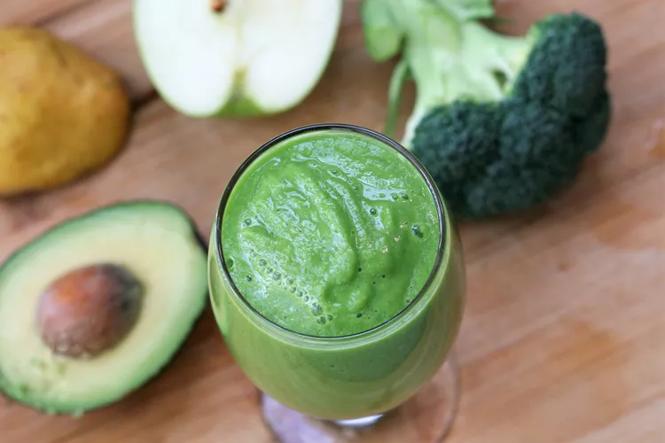

Green Detox Smoothie

Description
This green smoothie is great for detoxing — it's super easy and very
healthy. Don't be put off by the color, it actually tastes pretty good and
is great for digestion.
Ingredients
- ¾ cup pineapple juice
- ½ cup fresh spinach leaves
- 3 broccoli florets
- ¼ pear, chopped
- ¼ green apple, chopped
- ¼ avocado, chopped
Steps
-
Blend pineapple juice, spinach, broccoli florets, pear, apple, and
avocado in a blender until smooth.
Home